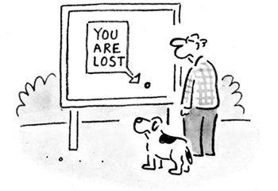
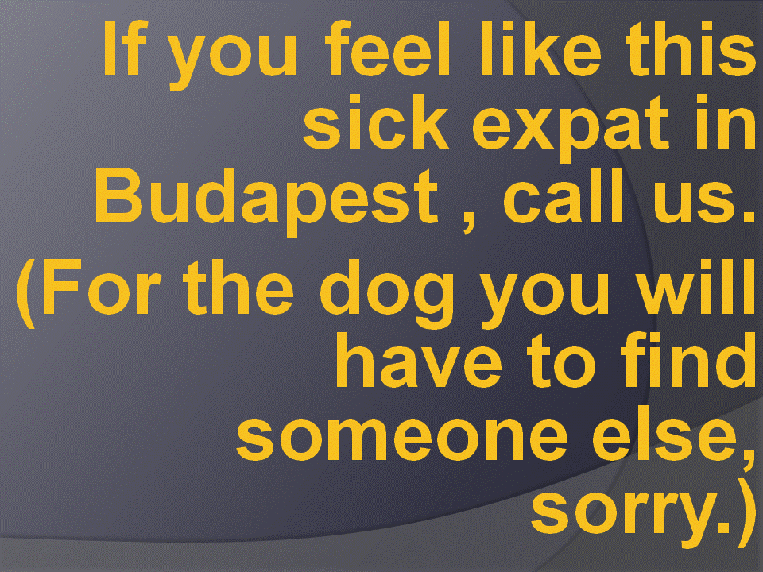

EXPAT
MEDICAL CLINIC
Tel.: +36 30 9141477 HOME
EXPAT
MEDICAL CLINIC
Tel.: +36 30 9141477 HOME
1037 Budapest, Mátyáshegyi út 43. E-MAIL How to get there?
|
1037 Budapest, Mátyáshegyi út 43. E-MAIL How to get there?
|
|
|
Expat Medical was the first medical provider in Hungary concentrating on the expat community here. It works on a different scheme, compared to the other private clinics or the one hospital. After 20 years in operation we might still be the best for those expats in Budapest and surrounding who value a service that may not be available from other private clinics. What difference is there in the philosophy? continued What do we not offer, they do? continued What do we offer, they do not? House visits continued Communication in your own language (with a good chance) continued Advice continued What do we offer (in a different way), they also do? Laboratory (blood taken even in your home, results ready even during the week-end in urgent cases) continued Vaccinations continued Specialists continued Certificates continued Ways of payment, direct settlement with international insurance companies continued
Trying to change some medical habits in the country:  Special chapter: Dr. Timár in tv shows
Music for expats and tourists :-)
doctor Budapest English Expatriate Expat docteur arzt Timar Kinderarzt HNO ear nose throat medico medecin pediatre deutsch Italiano Arzt Будапешт ПЕДИАТР врач otorino fül-orr-gégész gyermek-fül-orr-gégész gyermekorvos gyermekgyógyász fülorrgégész orr-fül-gégész gyermekgégész pediatrician paediatrician דר' טימר טיבורשמי הוא דר' טימר טיבורשמי הוא דר' טימר טיבורשמי הוא דר' טימר טיבורשמי הוא דר' טימר טיבור fül-orr-gégészet fül-orr-gégészet szakrendelő szakrendelés szakrendelő szakrendelés szakrendelő szakrendelés szakrendelő szakrendelés szakrendelő szakrendelés pediatrician paediatrician GP general practitioner physician English speaking doctors francophone Будапешт ПЕДИАТР врач doctor Budapest English Expatriate Expat docteur arzt Timar Kinderarzt HNO ear nose throat medico medecin pediatre deutsch Italiano Arzt Будапешт ПЕДИАТР врач otorino fül-orr-gégész gyermek-fül-orr-gégész gyermekorvos gyermekgyógyász fülorrgégész orr-fül-gégész gyermekgégész pediatrician paediatrician דר' טימר טיבורשמי הוא דר' טימר טיבורשמי הוא דר' טימר טיבורשמי הוא דר' טימר טיבורשמי הוא דר' טימר טיבור fül-orr-gégészet fül-orr-gégészet szakrendelő szakrendelés szakrendelő szakrendelés szakrendelő szakrendelés szakrendelő szakrendelés szakrendelő szakrendelés pediatrician paediatrician GP general practitioner physician English speaking doctors francophone Будапешт ПЕДИАТР врач
doctor Budapest English Expatriate Expat docteur arzt Timar Kinderarzt HNO ear nose throat medico medecin pediatre deutsch Italiano Arzt Будапешт ПЕДИАТР врач otorino fül-orr-gégész gyermek-fül-orr-gégész gyermekorvos gyermekgyógyász fülorrgégész orr-fül-gégész gyermekgégész pediatrician paediatrician דר' טימר טיבורשמי הוא דר' טימר טיבורשמי הוא דר' טימר טיבורשמי הוא דר' טימר טיבורשמי הוא דר' טימר טיבור fül-orr-gégészet fül-orr-gégészet szakrendelő szakrendelés szakrendelő szakrendelés szakrendelő szakrendelés szakrendelő szakrendelés szakrendelő szakrendelés pediatrician paediatrician GP general practitioner physician English speaking doctors francophone Будапешт ПЕДИАТР врач |

 Swedish
Swedish Italian
Italian


 French
French Russian
Russian Magyar
Magyar